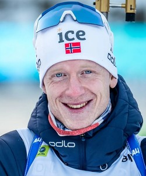
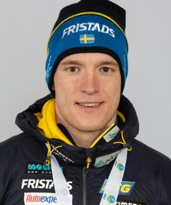
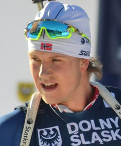
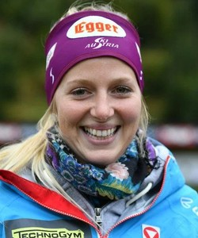

Мужчины
|  |
Имя: Йоханнес Тиннес Бё Имя (eng): Johannes Thingnes Boe Страна: Норвегия Дата рождения: 16 мая 1993 года |
|  |
Имя: Себастьян Самуэльссон Имя (eng): Sebastian Samuelsson Страна: Швеция Дата рождения: 28 марта 1997 года |
|  |
Имя: Ветле Шостад Кристиансен Имя (eng): Vetle Sjaastad Christiansen Страна: Норвегия Дата рождения: 12 мая 1992 года |
Женщины
|  |
Имя: Лиза Тереза Хаузер Имя (eng): Lisa Theresa Hauser Страна: Австрия Дата рождения: 16 декабря 1993 года |
 |
Имя: Марта Олсбю Ройселанн Имя (eng): Marte Olsbu Roeiseland Страна: Норвегия Дата рождения: 7 декабря 1990 года |